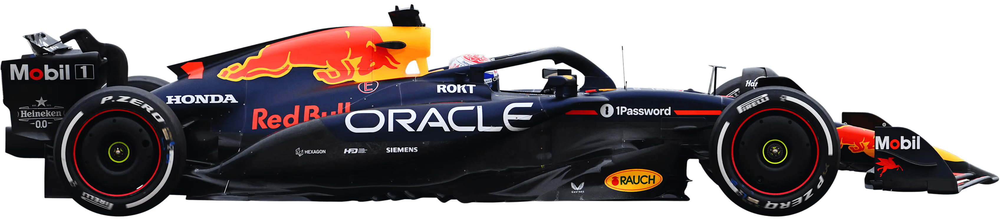
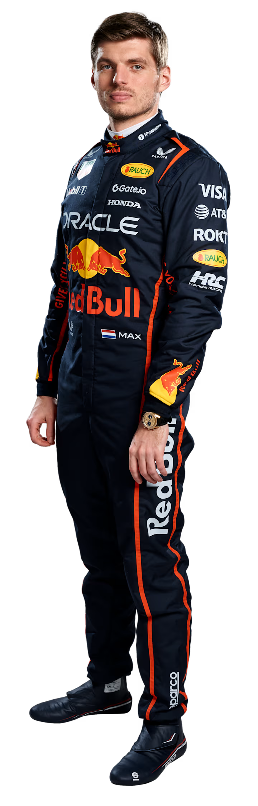
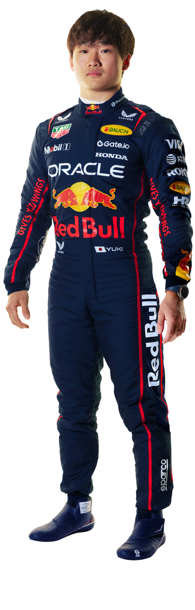

A Red Bull não era estranha à F1 — como patrocinadora — antes de entrar oficialmente como equipa em 2004. Ainda assim, a dimensão do seu sucesso na década seguinte foi surpreendente. Após o primeiro pódio em 2006, a equipa encontrou o seu ritmo em 2009, conquistando seis vitórias e o segundo lugar no campeonato de construtores. Nos quatro anos seguintes, foram uma força dominante, conquistando quatro duplas de títulos consecutivos entre 2010 e 2013, com Sebastian Vettel a emergir como o mais jovem tetracampeão da história do desporto. Agora, estão a reviver essa glória com um talento igualmente empolgante — chamado Max Verstappen…